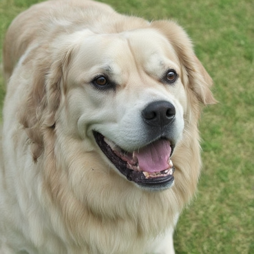
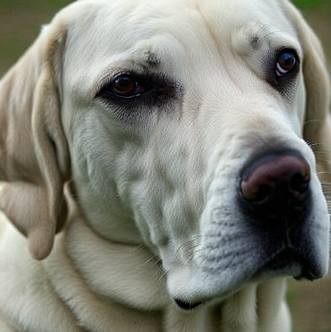
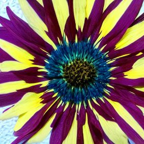
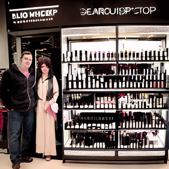
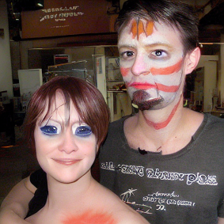
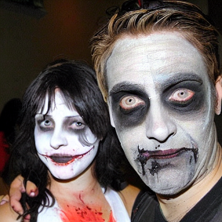
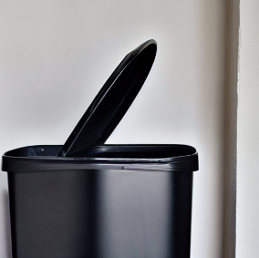
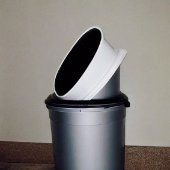
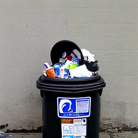

Case 1: 😄 Enjoyment vs. 😭 Sadness


This paper proposes a unified end-to-end speech-to-image model, VoxStudio, the first attempt to generate an expressive image directly from a spoken description by aligning both linguistic and paralinguistic information. We eliminate the need for an additional speech-to-text module, which often ignores the hidden details beyond text, e.g., tone or emotion. To further advance this direction, we introduce a new emotional speech and image dataset, VoxEmoset, that pairs emotional speech synthesized with corresponding visual scenes, enabling training and evaluation of both semantic and affective aspects of speech-to-image generation. Comprehensive experiments on the SpokenCOCO, Flickr8kAudio, and VoxEmoset benchmarks demonstrate the feasibility of our method and highlight key challenges, including emotional consistency and linguistic ambiguity, paving the way for future research.
Example 1
Text (SD-zero-shot)
Text (SD-finetuning)
Speech (VoxStudio)
Example 2
Text (SD-zero-shot)
Text (SD-finetuning)
Speech (VoxStudio)
Example 3
Text (SD-zero-shot)
Text (SD-finetuning)
Speech (VoxStudio)
Case 1: 😄 Enjoyment vs. 😭 Sadness
Case 2: 🤮 Disgust vs. 😄 Enjoyment